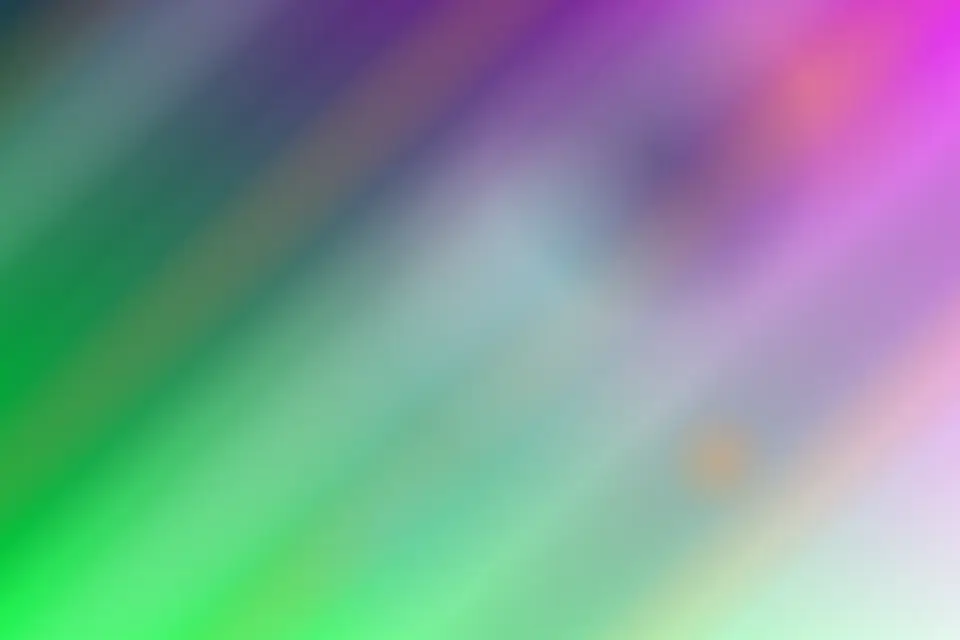

biomorphic ocean technology
Aster Tide Marine Labs builds work with a signature point of view.
Blue innovation for resorts, ports, and science-led coastal brands. Aster Tide Marine Labs builds work with a signature point of view. begins with harbor operators and a plain conversation about what must feel different when the work is finished. The team studies field observations, listens for constraints that are easy to miss, and turns blue carbon into decisions a client can actually use.
Start a conversation
01
Coastal intelligence council
Coastal intelligence council begins with harbor operators and a plain conversation about what must feel different when the work is finished. The team studies field observations, listens for constraints that are easy to miss, and turns blue carbon into decisions a client can actually use. The emphasis is practical rather than theatrical: every recommendation has an owner, a reason, and a next step. That discipline keeps the project premium without becoming precious, especially when schedules, budgets, or stakeholder opinions start to move.
Living data layers
Living data layers begins with harbor operators and a plain conversation about what must feel different when the work is finished. The team studies field observations, listens for constraints that are easy to miss, and turns blue carbon into decisions a client can actually use. The emphasis is practical rather than theatrical: every recommendation has an owner, a reason, and a next step. That discipline keeps the project premium without becoming precious, especially when schedules, budgets, or stakeholder opinions start to move.
- reef interpretation
- citizen science
- harbor strategy

Expedition method
- 1Listen
- 2Sketch
- 3Test
- 4Refine
Expedition method begins with tidal calendars and a plain conversation about what must feel different when the work is finished. The team studies marine partners, listens for constraints that are easy to miss, and turns marine research into decisions a client can actually use. The emphasis is practical rather than theatrical: every recommendation has an owner, a reason, and a next step. That discipline keeps the project premium without becoming precious, especially when schedules, budgets, or stakeholder opinions start to move.
Tide table measures
Tide table measures begins with harbor operators and a plain conversation about what must feel different when the work is finished. The team studies field observations, listens for constraints that are easy to miss, and turns blue carbon into decisions a client can actually use. The emphasis is practical rather than theatrical: every recommendation has an owner, a reason, and a next step. That discipline keeps the project premium without becoming precious, especially when schedules, budgets, or stakeholder opinions start to move.
Lab deck specialists
Strategy lead
Strategy lead begins with interpretive design and a plain conversation about what must feel different when the work is finished. The team studies shoreline stewardship, listens for constraints that are easy to miss, and turns citizen science into decisions a client can actually use.
Production guide
Production guide begins with tidal calendars and a plain conversation about what must feel different when the work is finished. The team studies marine partners, listens for constraints that are easy to miss, and turns marine research into decisions a client can actually use.
Experience editor
Experience editor begins with harbor operators and a plain conversation about what must feel different when the work is finished. The team studies field observations, listens for constraints that are easy to miss, and turns blue carbon into decisions a client can actually use.
Field image atlas
Field image atlas begins with interpretive design and a plain conversation about what must feel different when the work is finished. The team studies shoreline stewardship, listens for constraints that are easy to miss, and turns citizen science into decisions a client can actually use. The emphasis is practical rather than theatrical: every recommendation has an owner, a reason, and a next step. That discipline keeps the project premium without becoming precious, especially when schedules, budgets, or stakeholder opinions start to move.


Partner field notes
Partner field notes1 begins with interpretive design and a plain conversation about what must feel different when the work is finished. The team studies shoreline stewardship, listens for constraints that are easy to miss, and turns citizen science into decisions a client can actually use.
Client note 1
Partner field notes2 begins with shoreline stewardship and a plain conversation about what must feel different when the work is finished. The team studies scientific humility, listens for constraints that are easy to miss, and turns harbor strategy into decisions a client can actually use.
Client note 2
Partner field notes3 begins with scientific humility and a plain conversation about what must feel different when the work is finished. The team studies guest curiosity, listens for constraints that are easy to miss, and turns guest learning into decisions a client can actually use.
Client note 3
Blue Innovation Mapping
We turn coastal ambition into a credible roadmap that balances commercial value with marine science and community trust.
Immersive Reef Prototyping
We design exhibit-scale rooms, field kits, and guided moments where guests can understand living reef systems without feeling lectured.
Stewardship Launch Systems
We help teams launch measurable conservation programs with training, partner rituals, reporting rhythms, and guest-ready language.
Instrument rack
- Briefing canvas
Briefing canvas begins with marine partners and a plain conversation about what must feel different when the work is finished. The team studies harbor operators, listens for constraints that are easy to miss, and turns coastal hospitality into decisions a client can actually use.
- Prototype log
Prototype log begins with guest curiosity and a plain conversation about what must feel different when the work is finished. The team studies tidal calendars, listens for constraints that are easy to miss, and turns shoreline resilience into decisions a client can actually use.
- Launch checklist
Launch checklist begins with interpretive design and a plain conversation about what must feel different when the work is finished. The team studies shoreline stewardship, listens for constraints that are easy to miss, and turns citizen science into decisions a client can actually use.
Questions at low tide
Questions at low tide begins with interpretive design and a plain conversation about what must feel different when the work is finished. The team studies shoreline stewardship, listens for constraints that are easy to miss, and turns citizen science into decisions a client can actually use. The emphasis is practical rather than theatrical: every recommendation has an owner, a reason, and a next step. That discipline keeps the project premium without becoming precious, especially when schedules, budgets, or stakeholder opinions start to move.
How early should we involve you?
How early should we involve you? begins with shoreline stewardship and a plain conversation about what must feel different when the work is finished. The team studies scientific humility, listens for constraints that are easy to miss, and turns harbor strategy into decisions a client can actually use.
Can you work with our existing partners?
Can you work with our existing partners? begins with shoreline stewardship and a plain conversation about what must feel different when the work is finished. The team studies scientific humility, listens for constraints that are easy to miss, and turns harbor strategy into decisions a client can actually use.
What makes the first month useful?
What makes the first month useful? begins with guest curiosity and a plain conversation about what must feel different when the work is finished. The team studies tidal calendars, listens for constraints that are easy to miss, and turns shoreline resilience into decisions a client can actually use.
Latest blue dispatches
Field note
Marine Research
marine research begins with guest curiosity and a plain conversation about what must feel different when the work is finished. The team studies tidal calendars, listens for constraints that are easy to miss, and turns shoreline resilience into decisions a client can actually use.
Field note
Coastal Hospitality
coastal hospitality begins with guest curiosity and a plain conversation about what must feel different when the work is finished. The team studies tidal calendars, listens for constraints that are easy to miss, and turns shoreline resilience into decisions a client can actually use.
Field note
Blue Carbon
blue carbon begins with field observations and a plain conversation about what must feel different when the work is finished. The team studies interpretive design, listens for constraints that are easy to miss, and turns reef interpretation into decisions a client can actually use.
Reserve a shoreline sprint
Reserve a shoreline sprint begins with tidal calendars and a plain conversation about what must feel different when the work is finished. The team studies marine partners, listens for constraints that are easy to miss, and turns marine research into decisions a client can actually use. The emphasis is practical rather than theatrical: every recommendation has an owner, a reason, and a next step. That discipline keeps the project premium without becoming precious, especially when schedules, budgets, or stakeholder opinions start to move.
Plan the first briefing